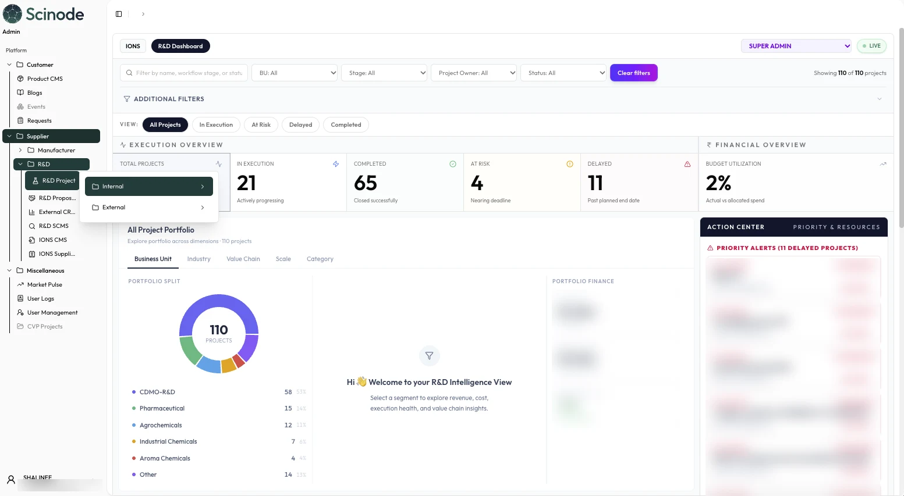
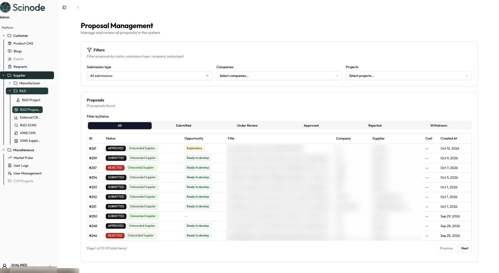
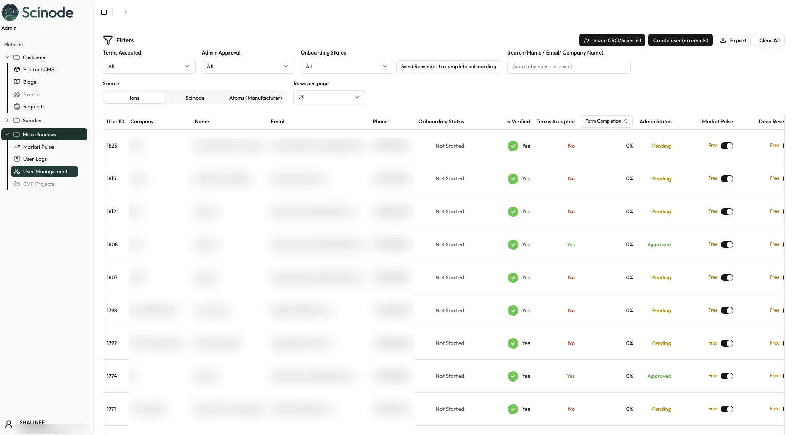
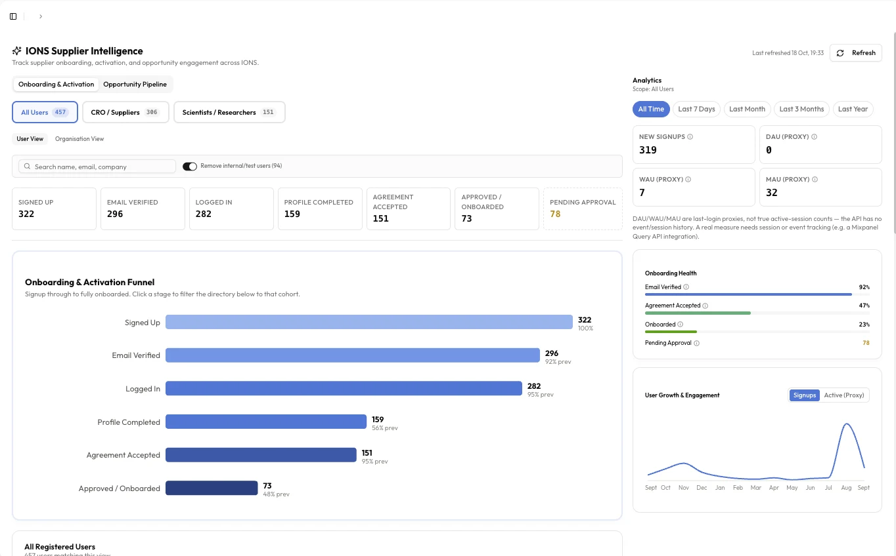
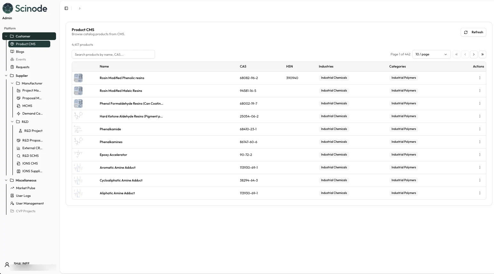
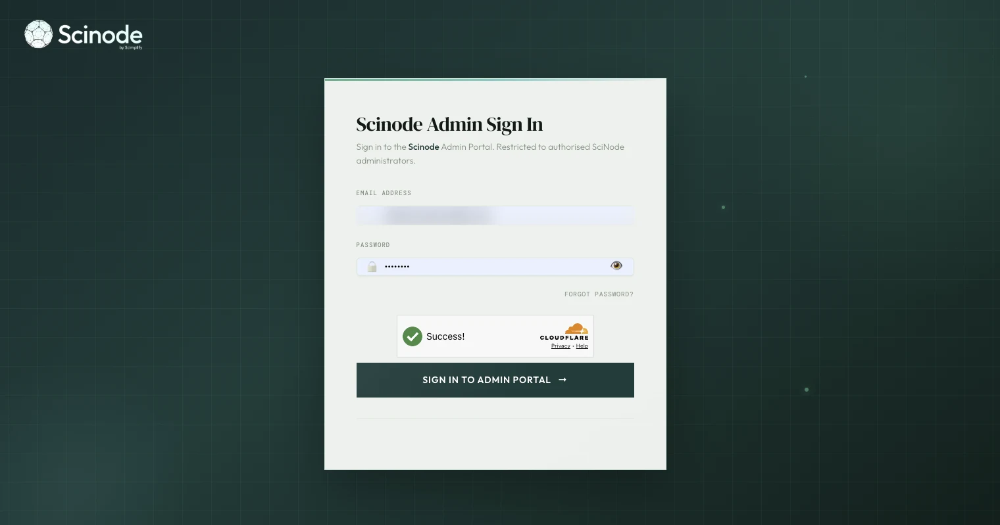

The portal where Scimplify’s business team runs the Scinode ecosystem. It bridges Scinode Customers, the partner platform for researchers and manufacturers, and Scinode Deep Research.
Role
Product Manager
Scope
Requests, opportunities, proposals, users, access and R&D tracking
For
Scimplify’s internal business team
Covers
One portal across the ecosystem
Impact
Spreadsheets down 93%.
−93%
Fewer spreadsheets
The business team’s work used to run across spreadsheets. It now runs in one portal, and the entire workflow is streamlined, from a customer request to a partner proposal to a project in delivery.
My scope
I owned the portal that connects every side of Scinode.
Scinode Admin is the bridge between Scinode Customers →, the partner platform for researchers and manufacturers (Scinode for Researchers →) and Scinode Deep Research →. It is where the business team approves, assigns, tracks and controls access, so each side works from the same record. Its R&D dashboard also tracks everything happening in Nucleus R&D →.
Who it is for
Four groups use the same portal.
Control
Super Admin
Decide who gets in, what each role can see, and approve what needs approving.
RolesAdmin approvalAccess
Can view the dashboards as a Super Admin and manage every module.
R&D and manufacturing
Project managers
Follow every project from proposal to delivery, and act on delays.
ProjectsProposalsAction center
Works in the project and proposal modules.
Portfolio
Business and operations
See the whole portfolio by business unit, stage and status, without asking for an update.
Portfolio splitExecution overviewBudget use
Reads the R&D dashboard.
Users and partners
Onboarding and partner success
Invite, verify and approve partners, and follow them from signup to onboarded.
Invite and create usersRemindersOnboarding funnel
Works in user management and supplier intelligence.
Where it sits
The bridge between the sides.
Customers bring requests, partners respond, and Deep Research serves researchers. Admin is where the business team keeps all of them in step.
Scinode Customers
Where the request enters and the customer follows it to delivery.
↔
Scinode Admin
The bridge: the business team runs requests, proposals, projects, users and content here.
↔
Partner platform
Scinode for Researchers, for labs, CROs and scientists, and the manufacturer side.
Scinode Deep Research connects through the same portal, for user access and plans.
What is in the portal
One portal, four areas.
Customer
Content and requests
The catalog and content that Scinode Customers shows, and the requests that come in.
Product CMSBlogsEventsRequests
Supplier: manufacturers
Projects and proposals
Manufacturer projects and the proposals that come back.
Project managementProposal managementMCMS
Supplier: R&D
The R&D workflow
Internal and external R&D projects, proposals and the CRO side.
R&D projectsR&D proposalsExternal CROR&D SCMS
Miscellaneous
Control and signals
Who is in the system, what they did, and what the market is doing.
User managementUser logsMarket PulseCVP projects
Inside the portal
The portal, in use.

R&D dashboardThe internal R&D dashboard: every project by stage and status, budget use, the portfolio by business unit, and an action center for delayed projects. Names, IDs and figures are blurred.
What to read in it
01Execution overviewTotal, in execution, completed, at risk and delayed projects, as filters.
02Portfolio splitProjects by business unit, industry, value chain, scale and category.
03Action centerDelayed projects, ranked, with the person to act.

ProposalsPartner proposals in one list: status, submission type, opportunity type and supplier. Filter from submitted to withdrawn. Titles and names are blurred.

UsersPartners and users across the platforms: onboarding status, verification, terms accepted, admin approval, and plan access. Names and contact details are blurred.

Supplier intelligenceThe onboarding funnel from signed up to approved, with onboarding health and growth.

Product CMSThe catalog behind Scinode Customers: thousands of products with CAS, HSN, industry and category.

Sign-inSign-in is restricted to authorised administrators.
Access is controlled
01Authorised onlyOnly authorised administrators can sign in.
02RolesWhat each person sees depends on their role.
03ApprovalNew partners wait for admin approval before they get access.
Product decisions
Three decisions that keep the sides in step.
→One portal, not one per side. Customers, manufacturers, R&D and Deep Research are managed in one place, so the business team learns one tool and works from one record.
→One proposal, many versions. A proposal stays one complete proposal through negotiation. Every change is saved as a new version, so nothing is overwritten and the history stays clear.
→Access is approved, not assumed. New partners and users wait for admin approval, and their plan access is set in the same list.
What I owned
→The portal as the bridge across Scinode Customers, the partner platform and Scinode Deep Research.
→Opportunities, proposal management and negotiation, and project tracking.
→User management and access, with admin approval, plans and onboarding follow-up.
→Supplier intelligence: the onboarding and activation funnel.
→The internal R&D dashboard that tracks Nucleus R&D.
→Product CMS, the catalog behind Scinode Customers.
→Moving the business team off spreadsheets: 93% fewer.